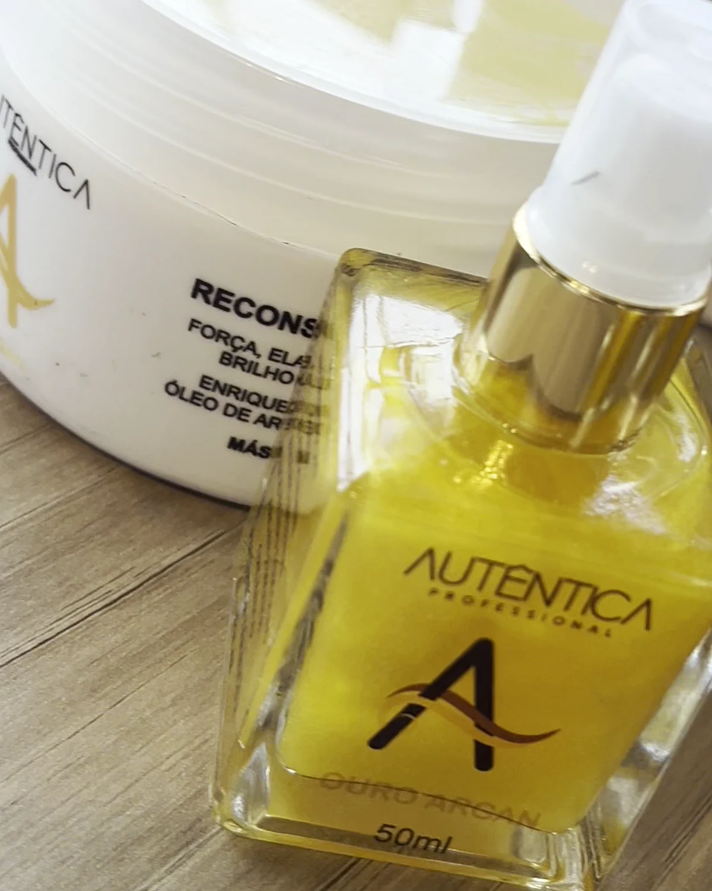

Finalização e proteção
Óleo Reparador Ouro Argan
Óleo de tratamento com brilho radiante.
Cuidado em casaRevenda
Elixir de tratamento para vender no checkout e reforçar o resultado visual do serviço.
01
Ativos e tecnologia
Óleo de Argan e Óleo de Monoi.
02
Para quem é indicado
Fios com frizz, opacidade e pontas ressecadas.
03
Resultado esperado
Nutre profundamente, elimina frizz e restaura brilho.
Escolha consciente
O produto certo começa com um bom diagnóstico.
A resposta do cabelo varia conforme histórico químico, estado da fibra, rotina e técnica de aplicação. Observe sempre a indicação do rótulo e, em procedimentos químicos ou produtos de uso profissional, conte com avaliação especializada.
Perfil de uso: Cuidado em casa · Revenda.